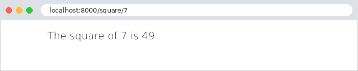
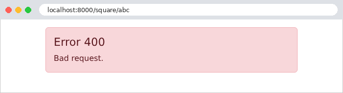

7. O ciclo de vida de uma requisição
Entre a chegada de uma requisição e o envio de sua resposta, o [Django] passa por várias etapas, e a aplicação pode intervir em cada uma delas. Já encontramos vários desses pontos de intervenção: os middlewares e seu método [__call__] (exemplos 03, 12, 16, 23), seus métodos [process_exception] (exemplos 08 e 12) e [process_view] (exemplo 21), e os conversores de rota (exemplo 12). Este capítulo os reúne em um único exemplo, que exibe uma mensagem no console a cada etapa para que a ordem possa ser observada:
-
- o sinal [request_started]: a requisição acabou de chegar. Um sinal é uma notificação, emitida pelo [Django] em um momento específico, que funções da aplicação — os receivers — podem receber. Elas não podem agir sobre a requisição: são apenas notificadas;
-
- O método [__call__] dos middlewares, antes da chamada a [get_response]: os middlewares são processados na ordem especificada pela configuração [MIDDLEWARE]. O roteamento ainda não ocorreu: um middleware ainda não sabe qual view tratará a requisição. Ele também pode responder por conta própria, sem invocar o restante da cadeia: nesse caso, nem os middlewares seguintes nem a view são chamados;
-
- Roteamento: depois que todos os middlewares foram processados, o [Django] procura a rota que corresponde ao caminho solicitado (exemplo 02); os conversores de parâmetros de rota (exemplo 12) são chamados nesse momento. Se nenhuma rota corresponder, uma exceção [Http404] (404) é lançada;
- 3 e 4. O método [process_view] dos middlewares, na ordem especificada: a view foi selecionada, mas ainda não foi chamada. Um middleware conhece então a view e seus parâmetros; ele pode deixar o processamento continuar (retornar [None]), responder no lugar da view ou lançar uma exceção;
-
- a view e o template que ela gera;
- x. O método de middleware [process_exception] , se a view lançou uma exceção, na ordem inversa da configuração. O primeiro que fornecer uma resposta encerra a busca. Se nenhum fornecer, o [Django] gera ele mesmo a resposta de erro: sua página detalhada no modo de depuração ou a página de erro da aplicação, fornecida pelas views [handler400], [handler403], [handler404], e [handler500] (veja abaixo). Uma exceção lançada em outro ponto (no [__call__] ou no [process_view] de um middleware, ou no roteamento) não passa por [process_exception]: o [Django] a converte em uma resposta de erro ao sair do middleware em questão;
- 6 e 7. O método [__call__] dos middlewares, após a chamada a [get_response], na ordem inversa da configuração: a resposta está pronta, e cada middleware pode modificá-la (adicionar um cabeçalho, um cookie);
-
- O sinal [request_finished], enviado depois que a resposta é enviada ao navegador. Os receivers não podem mais modificar a resposta: eles servem para tarefas de processamento que podem esperar (como fechar conexões de banco de dados, que é o que o [Django] faz), sem fazer o usuário esperar.
Isso equivale aos filtros do [Java] e aos interceptors do [Spring MVC], aos action filters do [ASP.NET Core MVC], às funções [before_request] / [after_request] e às funções do [Flask] , aos middlewares do [Laravel] e aos event listeners do [Symfony]. Em comparação com eles, a diferença está na estrutura: um middleware encapsula o restante do processamento (ele chama [get_response]e, assim, vê a requisição antes e a resposta depois, dentro do mesmo código, como as bonecas russas do exemplo 03), ao passo que um event listener reage a um evento, e é preciso escutar dois eventos — um antes e outro depois da ação — para atuar. A ordem dos middlewares, por sua vez, segue a lista da configuração [MIDDLEWARE], e não uma sequência numérica: isso é mais fácil de ler, mas é preciso conhecer as restrições de ordenação dos middlewares no [Django] (a sessão antes da autenticação, por exemplo; conforme especificado na documentação do [Django]).
7.1. Exemplo 24: As etapas do processamento de uma requisição
A aplicação tem apenas uma view, que calcula o quadrado de um inteiro: [/square/7]. Dependendo da URL, ela tem sucesso ou falha de várias maneiras. As mensagens são escritas no console do servidor por uma pequena função:
Por padrão, [print] escreve na saída padrão; o parâmetro [file=sys.stderr] a envia para a saída de erro, que é onde o [Django] escreve suas próprias mensagens: ambas serão, portanto, exibidas na ordem em que são geradas. (Uma aplicação real usaria o módulo [logging] do [Python], que o [Django] configura por meio de sua configuração [LOGGING]: o estudo de caso faz isso.)
7.1.1. A configuração: config/settings.py
- linha 9: [ALLOWED_HOSTS] é preenchido para que o exemplo possa ser implantado em produção ([DEBUG = False]) e as páginas de erro da aplicação possam ser vistas (veja abaixo);
- linhas 23–28: quatro middlewares, na ordem em que a requisição passa por eles.
7.1.2. Antes e depois de tudo: os sinais
- linha 3: os dois sinais do [Django] que emolduram cada requisição;
- linhas 12–15: o decorador [@receiver] conecta a função [start] ao sinal [request_started]: ela será chamada toda vez que o sinal for emitido. Um receiver recebe o emissor do sinal ([sender]), seguido de parâmetros nomeados específicos de cada sinal; [**kwargs] coleta os que ele não nomeia, como exige a documentação do [Django] (um sinal pode receber novos parâmetros em uma versão futura). [request_started] fornece [environ], o dicionário WSGI da requisição (exemplo 01): o objeto [HttpRequest] ainda não existe. O receiver exibe o método e o caminho, seguidos da mensagem nº 0;
- linhas 20–25: a mensagem nº 8, quando tudo termina, com a duração medida pelo timer (veja abaixo), se a medição foi iniciada.
O [Django] envia outros sinais: antes e depois de salvar um modelo do ORM ([pre_save], [post_save]), quando um usuário faz login ([user_logged_in])... e a aplicação pode definir os seus. Um receiver deve ser registrado quando a aplicação inicia, antes da primeira requisição. O local previsto para isso é a configuração da aplicação:
- linhas 6–7: a configuração de uma aplicação é uma classe que herda de [AppConfig], convencionalmente localizada no módulo [apps.py] da aplicação, e que o [Django] localiza sozinho. [name] é o nome do pacote da aplicação. É também aqui que se daria à aplicação um nome legível por humanos ([verbose_name]);
- linhas 11–12: o [Django] chama o método [ready] uma única vez, na inicialização, quando todas as aplicações estão carregadas. Importar o módulo [signals] ali é suficiente: seus decoradores [@receiver] conectam os receivers quando são executados. A importação é feita dentro do método, e não no topo do arquivo, porque um módulo que usa os modelos do ORM não pode ser importado até que as aplicações tenham sido carregadas. O comentário [# noqa: F401] instrui as ferramentas de verificação de código a não sinalizar uma importação “não utilizada”.
7.1.3. Antes e depois da view: o middleware Logger
- Linhas 14–22: o primeiro middleware da configuração: ele processa a requisição antes de todos os outros (mensagem nº 1) e a resposta depois de todos os outros (mensagem nº 7), junto com seu código ([status_code]). Ele não conhece a rota, pois o roteamento ainda não ocorreu. Serve para o processamento que se aplica a todas as requisições: registro em log, tratamento de um proxy (o estudo de caso menciona isso em relação ao endereço IP dos clientes)...
7.1.4. Roteamento: calc/converters.py
Um conversor de rota (exemplo 12), que escreve a mensagem nº 2. Ele aceita qualquer segmento (a expressão [[^/]+]: um ou mais caracteres que não sejam barras) e o converte em um número inteiro ou em [None] se não for um: diferentemente do conversor [int] (exemplo 02), que retornaria uma página 404 para [/square/abc]; aqui, a view determinará o resultado. O arquivo [config/urls.py] o registra como [integer]:
- Linhas 18–21: as views das páginas de erro, descritas mais adiante.
7.1.5. Depois do roteamento: o middleware “Block”
Voltemos ao arquivo [calc/middleware.py]:
- Linhas 26–39: o segundo middleware só atua dentro de seu método
***[process\_view], após o roteamento. [request.resolver_match] descreve o resultado do roteamento (exemplo 16): o nome da rota ([url_name]***), a view e seus parâmetros. Mensagem nº 3; - Linhas 36–38: o parâmetro [?block] da URL provoca um erro 403 (Forbidden, acesso negado): a exceção [PermissionDenied] interrompe o processamento; os [process_view]s seguintes e a view não são chamados.
7.1.6. Antes da view: o middleware Timer e o decorador @timed
Queremos cronometrar apenas certas views — as que o solicitarem. Basta marcá-las com um decorador de nossa autoria:
- linhas 27–29: um decorador que não substitui a view; ele adiciona um atributo, [timed], e a retorna. Em [Python], uma função é um objeto ao qual se podem adicionar atributos. É assim que o próprio [Django] marca certas views: [@csrf_exempt] (exemplo 18) adiciona o atributo [csrf_exempt], que o [CsrfViewMiddleware] lê em seu método [process_view];
- Linha 8: o instante de início deve ser passado de [process_view] para o sinal [request_finished]. No entanto, o servidor processa várias requisições simultaneamente: uma variável de módulo comum seria compartilhada por todas elas. Um objeto [threading.local] tem atributos específicos de cada thread: cada requisição, processada em sua própria thread, tem seu próprio instante de início;
- linhas 11–22: início e parada do timer. [time.perf_counter_ns()] é um relógio preciso, em nanossegundos, projetado para medir durações. [getattr(object, name, default)] retorna um atributo de um objeto ou o valor padrão se ele não existir: o timer pode não ter sido iniciado nesta thread. A duração é retornada em milissegundos.
O middleware que lê a marca, no arquivo [calc/middleware.py]:
- linhas 55–61: em [process_view], se a view contém a marca, a mensagem nº 4 é enviada e o cronômetro é iniciado. A marca também é guardada na requisição para uso posterior. O decorador [@require_GET], aplicado sobre [@timed] (arquivo [calc/views.py]), não apaga a marca: [functools.wraps] (exemplo 08) copia os atributos da função que envolve;
- linhas 49–53: em [__call__], depois da view, mensagem nº 6, com o código da resposta, se a view foi cronometrada.
7.1.7. A view: calc/views.py
- linha 15: a view é marcada com o nosso decorador [@timed];
- linha 16: o parâmetro [n] é fornecido pelo nosso conversor;
- linhas 18–19: um parâmetro que não é um inteiro: erro 400 (Bad Request), causado pela exceção [BadRequest] (exemplo 07);
- linhas 20–21: o número 13 causa um erro “inesperado”, uma exceção [DomainError] da aplicação;
- linha 22: o caso normal. O template [calc/result.html] simplesmente exibe o resultado.
7.1.8. Tratamento de erros: o middleware ErrorPage e as views de erro
O último middleware do arquivo [calc/middleware.py] substitui as páginas de erro do [Django] pelas nossas, para as exceções que escapam da view:
- linha 67: um dicionário cujas chaves são classes de exceção e cujos valores são os códigos HTTP correspondentes;
- linhas 76–79: [isinstance] (exemplo 03) verifica se a exceção pertence a uma dessas classes (ou a uma classe filha). Se pertencer, exibe a mensagem nº x, junto com o código, e [break] encerra o laço;
- linhas 80–85: o [else] de um laço [for] é executado se o laço terminou sem um [break]: nenhuma das três classes é adequada. Uma exceção [DomainError] é um erro “inesperado”, convertido em uma página de erro “personalizada” com o código de status 500 (Internal Server Error). A mensagem da exceção é exibida no console, mas não na página: ela pode conter detalhes internos que não interessam ao usuário. As demais exceções são tratadas pelo [Django] ([return None]);
- linha 88: a resposta, que substitui a exceção. Ela passa então pelos middlewares anteriores ([Timer], depois [Logger]), como uma resposta comum.
Este middleware trata apenas as exceções lançadas pela view. Para os demais casos (a exceção [PermissionDenied] do middleware [Block], o erro 404 de uma URL sem rota), [Django] usa as views de erro da aplicação, declaradas no arquivo [config/urls.py] pelas variáveis [handler400], [handler403], [handler404] e [handler500] (linhas 18–21), e escritas no arquivo [calc/errors.py]:
- linhas 9–10: a exceção da aplicação: uma classe que herda de [Exception], sem acrescentar nada ([pass] é a instrução que não faz nada: um bloco não pode ficar vazio);
- linhas 15–29: as views de erro recebem a requisição e a exceção (exceto a view 500, que recebe apenas a requisição);
- linhas 32–34: a mesma página de erro para todas, com o código do erro (mensagem nº x).
Há uma sutileza: no modo de depuração, o [Django] mantém suas páginas detalhadas para os erros 400, 404 e 500, e usa essas views apenas para o erro 403. Isso é intencional: durante o desenvolvimento, a página detalhada é mais útil. Fora do modo de depuração, as quatro views são usadas. Sem essas views, o [Django] usaria, fora do modo de depuração, suas páginas simples (exemplo 03), ou templates da aplicação chamados [400.html], [403.html], [404.html], e [500.html] se existirem: esta é outra maneira, ainda mais simples, de substituir as páginas de erro. A página de erro da aplicação:
- linha 8: o DTL não tem um dicionário definido no template; a mensagem é escolhida por uma sequência de [{% elif %}].
7.1.9. Execução
O caso normal, [/square/7]:

O console do servidor exibe as etapas, em ordem:
A linha entre colchetes é o log do servidor de desenvolvimento, escrita depois que a resposta é enviada, logo antes do sinal [request_finished]. Um acesso bloqueado, [/square/7?block]:

O middleware [Block] lançou uma exceção em [process_view]: nem o [process_view] de [Timer] nem a view foram chamados. A exceção não passou por [process_exception] (ela não veio da view): [Django] a converteu em uma resposta por meio da view [handler403] e depois a escreveu no log, junto com sua pilha de chamadas (uma exceção [PermissionDenied] é um erro do cliente, que o [Django] registra mesmo assim dessa forma, no nível “warning”). A resposta passou pela segunda metade do middleware [Logger]. O sinal [request_finished] foi emitido, mas não exibiu nada, pois a medição não havia começado. Um parâmetro que não é um inteiro, [/square/abc]:

Desta vez, a view foi chamada — [None] — e foi ela que lançou o erro 400; [process_exception] o transformou em uma página. [Django] ainda assim registrou a resposta 400 em seu log ([Bad Request: /square/abc]). Um erro “inesperado”, [/square/13]:

A exceção foi tratada pelo nosso middleware: o usuário vê a página de erro “personalizada”, e não a página detalhada, mesmo com o modo de depuração ativado. Por fim, uma URL que não corresponde a nenhuma rota, [/unknown]:
O roteamento falhou: nenhum [process_view], nenhuma view. No modo de depuração, a página 404 é a página detalhada do [Django] (exemplo 02). Vamos colocar o exemplo em modo de produção ([DEBUG = False] no arquivo [config/settings.py]); é preciso então iniciar o servidor com [python manage.py runserver --insecure] para que ele continue servindo os arquivos estáticos (exemplo 15):
A página 404 agora é a nossa, gerada pela view [handler404] (o console exibe [x. view of the error page 404]).
Vamos resumir os pontos principais. O middleware é o lugar certo para as verificações comuns a muitas views (o usuário está logado? Tem permissão para acessar esta view?), e os decoradores são para as verificações que se aplicam a apenas algumas views: a autenticação se apoiará neles, como veremos no próximo capítulo. [process_exception] e as views de erro garantem que o usuário nunca veja uma página técnica, qualquer que seja o erro: o estudo de caso tira proveito disso.